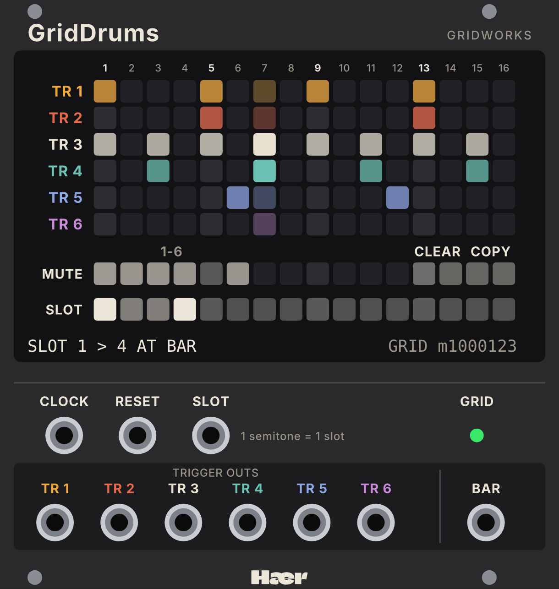

GridDrums
Gridworks plugin for VCV Rack 2 · a six-track drum sequencer for the monome grid · by Hær

What it does
Six drum tracks of sixteen steps. Each track is one row on your grid. Press a key to switch a step on or off; the lights show the pattern and the step that's playing. The same grid is drawn on the panel and you can click it, so it also works without the grid plugged in.
Sixteen memory slots hold sixteen patterns. Press a slot and it takes over at the start of the next bar, so changes always land on the one.
Before you start
- Install serialosc from monome.org (the free helper that lets apps talk to the grid). Same one the monome-rack modules use.
- Install Gridworks-2.0.0-mac-arm64.vcvplugin by dropping it into Rack's plugins folder, then restart Rack.
The grid map
Rows 1-6
Track 1 to 6. One key per step (column 1 = step 1)
Row 7
MUTE tracks 1-6
CLEAR
COPY
Row 8
SLOTS 1 to 16 (bright = playing, blinking = waiting for the bar, dim = has a pattern)
| To… | On the grid | On the panel |
|---|
| Switch a step on/off | Press its key | Click it |
| Mute a track | Row 7, keys 1-6 (they flash as the track plays) | Click the same keys |
| Change pattern | Row 8: press a slot | Click a slot |
| Copy this pattern to a new slot (to make a variation) | Hold COPY, press the slot | Click COPY, then the slot |
| Empty one track | Hold CLEAR, press any key in that track | Click CLEAR, then the track |
| Empty a slot | Hold CLEAR, press the slot | Click CLEAR, then the slot |
First patch (2 minutes)
- Add GridDrums. Its GRID light turns green when it has found your grid (the status line says which).
- Clock: a VCV Clock ×4 output (16th notes) → CLOCK. Its reset output → RESET.
- TR 1 → kick (e.g. Boohm), TR 2 → snare, TR 3/TR 4 → closed/open hat (808 Metal), TR 5/6 → percussion. Slot 1 starts with a basic four-to-the-floor beat.
- Press COPY + slot 2, change a few steps in slot 2, then jump between slots 1 and 2 to build a section.
Arrangement idea. Plug a sequencer's pitch output into SLOT: each semitone picks the next slot (0 V/C = slot 1, C# = slot 2…). A slow sequence of notes, one per bar or per 4 bars, becomes the song form. Long Form or Metropolix can drive it. BAR gives a trigger on every step 1 to clock that sequencer.
Right-click menu
- Grid list: choose which grid this module uses. Only one module or app can use a grid at a time; choosing it here takes it from monome-rack or other apps, and choosing it there takes it back.
- Let go of the grid / Look for grids again (if you plugged the grid in after opening Rack and it isn't found).
- Gate outputs: outputs stay high as long as the clock pulse instead of a short 5 ms trigger.
- Change slot at once: skip waiting for the bar. (If the clock is stopped, slot changes are always at once.)
- Clear the playing slot · Unmute all. Rack's Randomize makes a random beat in the playing slot.
Everything (all 16 slots, mutes, the grid choice) is saved with the patch. A 16×16 grid uses its top half; an 8-wide grid shows steps 1-8.